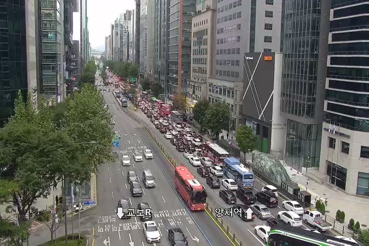

FROM PIXELS TO KNOWLEDGE
도시의 장면을 읽고,
지식으로 연결하다.
다섯 장의 CCTV 이미지에서 날씨·보행 혼잡도·교통량을 읽습니다.
실제 영상 모델의 관측을 RDF로 연결하고, SPARQL로 확인하세요.
Ollama 연결 확인 중…
THE VISUAL EVIDENCE
같은 거리, 다섯 개의 순간

FRAME 01 / 05원본 데모에 포함된 연속 이미지입니다. 썸네일을 눌러 각 장면을 확인하세요.
모델이 읽은 장면
EN → KO구조화에는 영문 원문만 사용합니다. 한국어는 읽기 위한 번역입니다.
STRUCTURED OBSERVATIONS
장면에서 추출한 세 가지 관측
분류값을 시각화합니다. 막대는 혼잡·교통량의 순서이며, 확률이나 신뢰도가 아닙니다.
LIVE KNOWLEDGE GRAPH
관측에 센서와 장소를 연결하면
분석 후 실제 RDF 관계가 여기에 표시됩니다.
센서 / 위치관측 / 속성모델의 결과
SPARQL이 조회한 근거
0 ROWS센서 ID로 위치·영상 URL·관측 결과를 연결한 실제 질의 결과입니다.
| 센서 / 위치 | 관측 속성 | 결과 | 관측 시각 |
|---|---|---|---|
| 분석을 실행하면 조회 결과가 나타납니다. | |||
INSPECT THE EVIDENCE
실제 응답과 질의를 직접 확인하세요.
위치 + 관측 조회 · SPARQL
생성된 지식 그래프 · Turtle
분석 후 생성됩니다.
실제 Ollama 호출 기록 0회
실행 전 · 가공 결과를 미리 채워 넣지 않습니다.